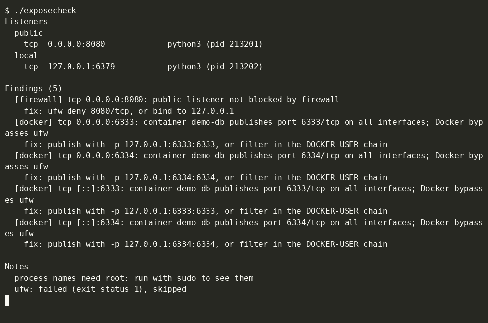

exposecheck
Audit listening network sockets on a Linux host and report unblocked public services or Docker port exposures.

What it finds
1. Unblocked public listeners
Reads kernel socket tables from /proc/net/, maps inodes to local processes, and verifies host firewall rules (ufw, iptables, nftables). Public ports missing drop or reject rules are flagged with clear remediations.
[firewall] tcp 0.0.0.0:8080: public listener not blocked by firewall
fix: ufw deny 8080/tcp, or bind to 127.0.0.12. Docker port bypasses
Docker publishes container ports via custom iptables rules directly on host interfaces. These bindings bypass standard ufw host firewalls. exposecheck queries container port maps and flags any exposed interface bindings.
[docker] tcp 0.0.0.0:6333: container local_rag_qdrant publishes port 6333/tcp on all interfaces; Docker bypasses ufw
fix: publish with -p 127.0.0.1:6333:6333, or filter in the DOCKER-USER chain3. Scriptable JSON and exit codes
Integrates into CI pipelines and periodic cron checks. Emits structured JSON with --json and exits with code 1 when findings are present.
$ ./exposecheck --json | jq .findings[0]
{
"kind": "firewall",
"proto": "tcp",
"addr": "0.0.0.0",
"port": 8080,
"reason": "public listener not blocked by firewall",
"fix": "ufw deny 8080/tcp, or bind to 127.0.0.1"
}
$ echo $?
1Try it
Install with Go (version 1.27 or later):
go install github.com/sachindots/exposecheck@latest
sudo exposecheckOr build from source:
git clone https://github.com/sachindots/exposecheck.git
cd exposecheck
go build -o exposecheck .
sudo ./exposecheckLimits
- Linux only: Requires Linux
/procfilesystems (/proc/net/*and/proc/<pid>/fd/*). - Own host only: Audits the local host where the binary runs; does not send remote network probes.
- No config file: Accepts only
--json. No config file or exclusion rule file. - No auto-fix: Reports actionable fix commands, but does not alter firewall configurations or stop containers.
- Simple firewall rule parsing: Ignores source address constraints. Chains that delegate or jump to external tables are skipped.
- Needs root: Resolving process names across users and querying host firewalls (ufw, iptables, nft) requires root privileges.